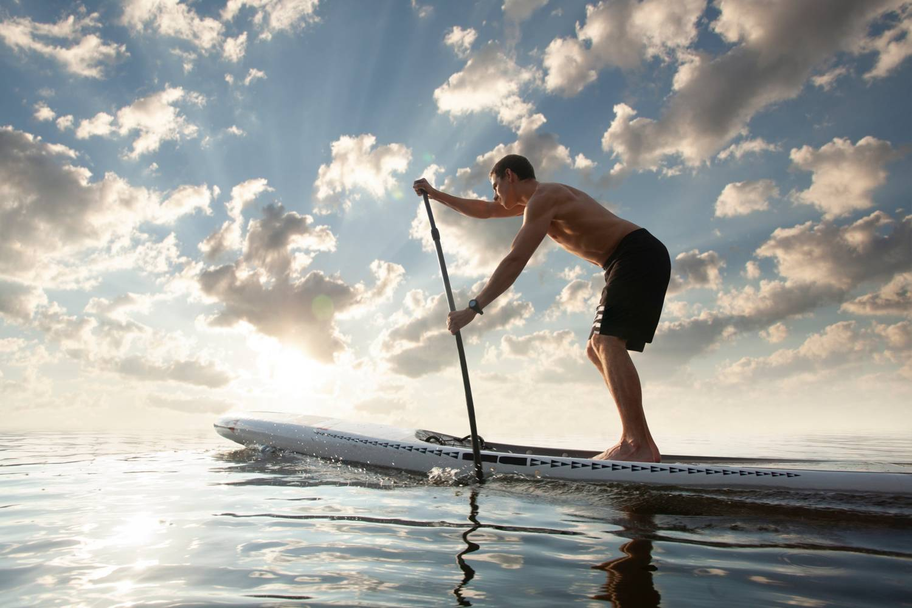
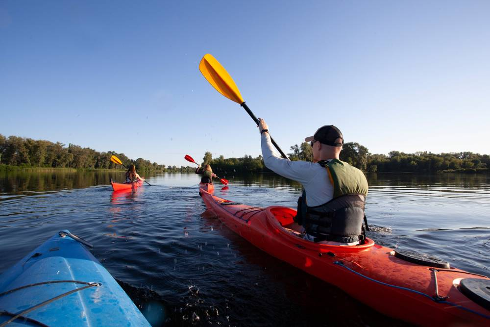
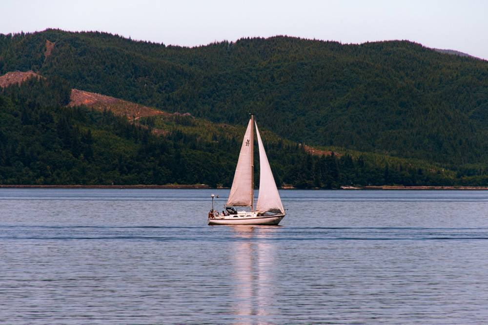

Know the water before you’re on it.
Slackwater turns tide tables into one clear answer: is it safe to launch, and for how long. Built for kayakers, paddleboarders and dinghy sailors.

1.9 m
Drag the slider to scrub through the day. Illustrative data.
One number, not a table.
Your launch window, in minutes
Pick your put-in and the draw of your boat. Slackwater shows how long the water stays deep enough to get out and back.
2h 40m
Alerts for your slip
Get a nudge two hours before the window opens, not a daily digest of numbers you have to decode.
Works offline
Tides are calculated on your phone, so the chart is still there past the last bar of signal.
Built for whatever floats.


Maya R., sea kayak guideI used to carry three printed tables. Now I check one screen at the car park and we’re on the water.